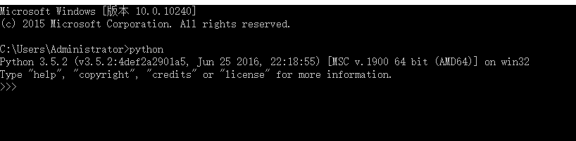
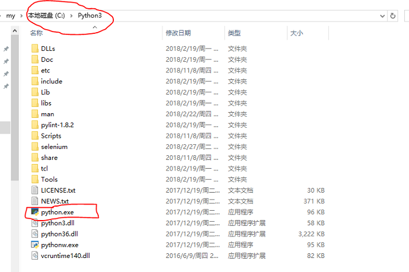
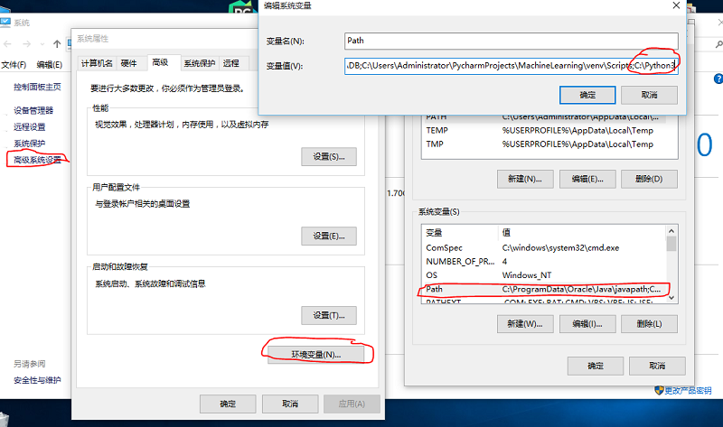

123412431234123re aliquam.
Python3 可应用于多平台包括 Windows、Linux 和 Mac OS X。
Mac本身内置的是Python2.7的解释器，所以需要下载3.7的安装包
你也可以参考源码安装的方式来安装。Python官网
在安装之前，你想要确认你的电脑是32位还是64位的才能根据不同需求进行安装。
当然，你还可以在Python官网下载zip格式。但是对于新手来说还是exe程序比较合适。
切记要将上图的Path路径勾选上
按 Win+R 键，输入 cmd 调出命令提示符，输入 python敲回车。
如上图，显示Python版本信息并且进去‘>>>’交互模式说明安装成功。
如果提示以下错误：
‘python’ 不是内部或外部命令，也不是可运行的程序或批处理文件。 说明在安装时没有勾选path选项。没有关系，我们可以手动设置。找到python.exe的路径,比如我就是这里：C:\Python3
右键点击"计算机"，然后点击"属性"
点击"高级系统设置"
选择"系统变量"窗口下面的"Path",双击即可！
在"Path"行，添加python安装路径即可(我的C:\Python3)，所以在后面，添加该路径即可。 ps：路径用分号"；"隔开！
设置成功以后，在cmd命令行，输入命令"python"，就可以有相关显示。

123412431234123re aliquam.

犯得上法发到付 m.

12312435145146orper dolore aliquam.
如果大家有什么建议或者建议请及时联系我我才能为大家做出更好的教程